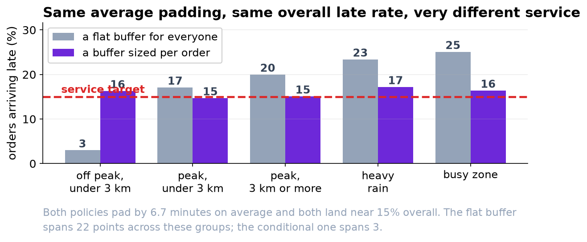
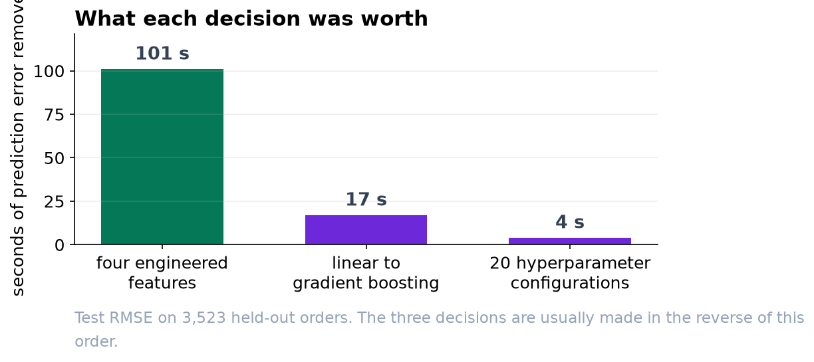

Stop Adding Eight Minutes to Every Order.
The flat buffer hits the service target on average and misses it for one order in four when the zone is busy. A buffer that varies costs the same and keeps the promise to everybody.
Recommendation
Replace the flat 8-minute buffer with one the model sets per order. Easy orders get about 2 minutes, hard ones about 12, and the average across all orders is slightly less than the 8 you add today. The overall late rate barely moves. What changes is who is late, and that is the part customers experience.
What is wrong with the current number
The app shows a prediction plus 8 minutes for every order. Overall, 11.8 percent of orders arrive after the displayed time, comfortably inside your 15 percent target. That headline figure is hiding the problem.
| Kind of order | Arrive late today |
|---|---|
| Off peak, short distance | 1.9% |
| Peak hours, short distance | 13.1% |
| Peak hours, longer distance | 17.0% |
| Heavy rain | 19.8% |
| Busy zone (over 2 orders per courier) | 21.8% |
The customers who order at dinner time, live further out, or order when it is raining are late three to eleven times as often as everybody else. They are the same customers every week, and the average across the zone tells you nothing about them.

Why a fixed buffer cannot fix it
Eight minutes is roughly right for a typical order and wrong at both ends. Our model is accurate to about 5 minutes on a quiet afternoon and about 12 when the zone has more than two pending orders per courier. That is not a flaw we can train away, it is a fact about deliveries: some are simply less predictable than others.
We set a flat buffer to the same average padding as the model's per-order buffer, so both spend exactly the same amount of promised time. Overall late rate: 15.0 percent for the flat buffer, 15.4 for the per-order one. Effectively identical. Across the six kinds of order above, the flat buffer's late rate ranges over 22 percentage points and the per-order one over three.
What we would change
Show the model's per-order estimate. It gives about 2 minutes of padding to the easiest tenth of orders, about 7 to a typical one and about 12 to the hardest tenth. Nothing is padded arbitrarily; the padding tracks how confident the model actually is.
There is one decision we cannot make for you. Being late costs about three times what being early costs, and on that basis the cheapest policy leaves 25 percent of orders late and saves about 13 percent against today's cost. Your service target of 15 percent costs slightly more than the cheapest option. Both are defensible; the gap between them is what the service promise is worth to the business.

Two things worth knowing before this ships
Longer quoted times may lose orders. A customer told 65 minutes may order elsewhere. That effect is real, it is not in this dataset, and it is measurable with a small experiment. It is the single most important thing to test before a full rollout.
This is one season. Eighty-four days, no winter, no holiday peak. The model should be re-measured on a schedule rather than when somebody notices it drifting.